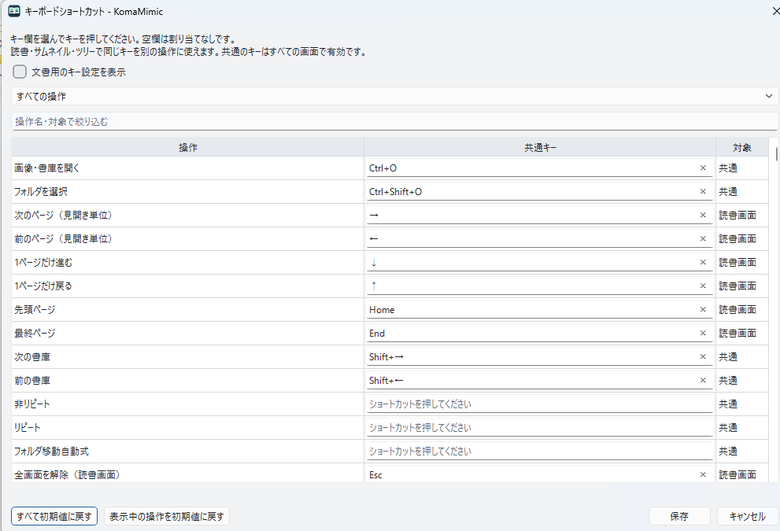

Basic controls
日本語 | English
Screenshots on this page show the Japanese UI.
These defaults apply to new settings. If you have customized your controls, saved assignments take priority. On macOS, also see macOS differences.
Opening books and folders
Use Ctrl+O to select an image, archive, PDF, or document, and Ctrl+Shift+O to open
a folder. You can also drag and drop onto the window. In the cover list,
double-click an item, or select it with the arrow keys and press Return/Enter.
Use Ctrl+Return to read the images inside a folder directly.

Moving between pages
| Action | Default key |
|---|---|
| Next / previous display | → / ← |
| Shift a spread by one page | ↓ / ↑ |
| First / last page | Home / End |
| Next / previous archive | Shift+→ / Shift+← |
| Cover list / parent folder | Shift+↓ / Shift+↑ |
| Page thumbnails | Ctrl+E |
| Folder tree | Ctrl+T |
| Go to page | Ctrl+N |
| Full screen | Windows/Linux: F11; macOS: Control+Command+F |
| Fit to window / original size | X / C |
| Toggle automatic spreads | Space |
Opening direction and navigation keys are separate settings. Even when opening right-to-left, next/previous keys follow the table above. For images, Space toggles automatic spreads; for documents, it switches the book's single-page/spread layout. Return confirms a selection in lists; it is not shared with full screen.
Next / previous archive (Shift+→ / Shift+←) moves from the currently displayed file through individual images, archives, documents, and videos in the same folder, using the existing sort order. For example, 01.jpg ⇄ 01.mkv ⇄ 02.jpg ⇄ 02.mkv includes every image. Changing the display mode for animated images does not change this order.
Reading-mode → / ← still moves through images only in a folder, or through images inside the current archive. Document navigation and short seeks within videos are unchanged.

Mouse
While reading images, left-click moves forward and right-click moves backward. The wheel scrolls vertically and turns pages at the edge. Hold the right button and use the wheel to zoom. The middle button opens the magnifier; dragging with it pans the image. Double-click left/right to start forward/reverse autoplay; repeat the action in the same direction to stop. Large images scroll before advancing to the next page.
Moving the mouse over cover or page thumbnails selects the item under the pointer. Disable this in Preferences → Display → select thumbnails on mouse movement.
Customizing controls
Change keys under Tools → Control settings → Keyboard (Ctrl+K). Select the
common, reading, thumbnail, or tree scope and use search to narrow the action list.
Mouse, gamepad, and bottom-toolbar controls are also available in Control settings.
Preferences opens with Ctrl+Alt+, on Windows/Linux and Command+, on macOS.
The Navigation menu selects what happens after the last page: no repeat, repeat, or automatic folder navigation. Moving backward before the first page follows the same rule in reverse.
